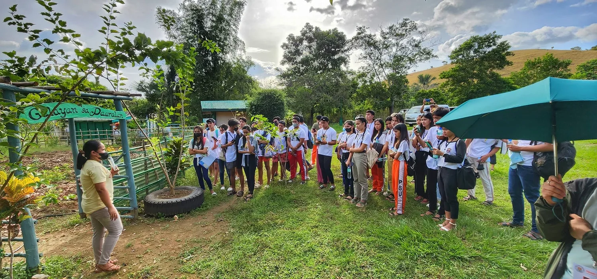
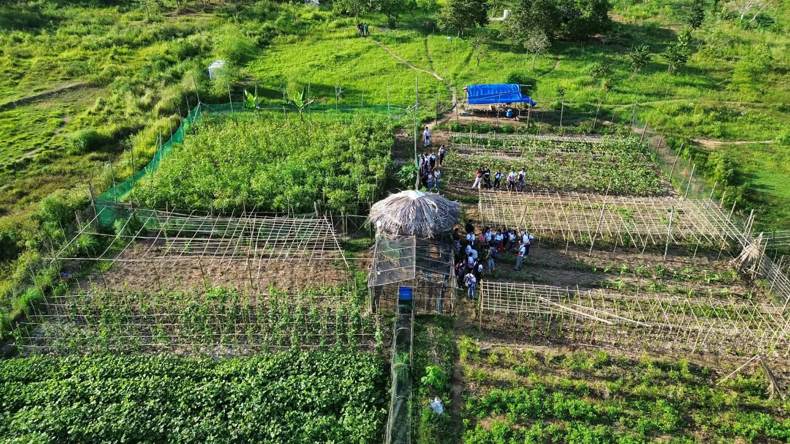
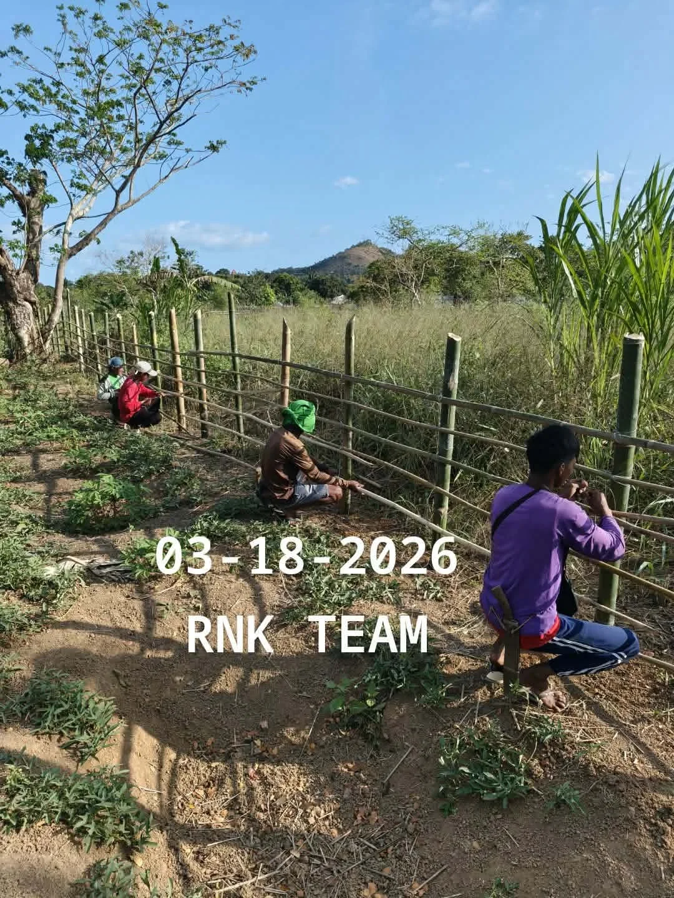
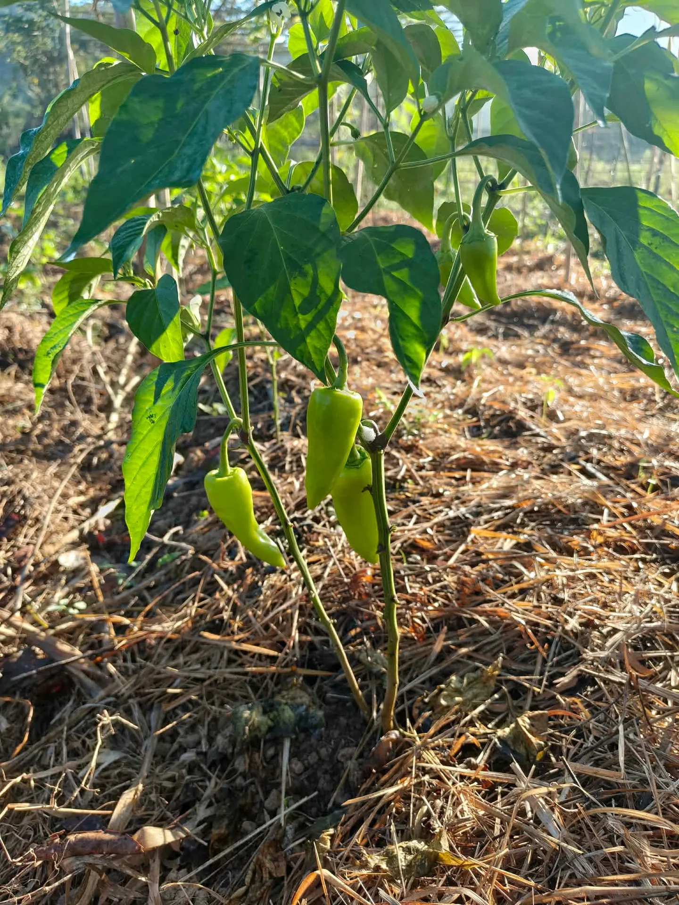

A living landscape shaped by water, mangroves and time.
Explore the landscape, the wider community context, and archive material that documents earlier chapters of Kingfisher Park.
SEE REGENERATIVE AGRICULTUREThe experience begins with the place itself.
Kingfisher Park is a living landscape of waterways, mangroves, forest edges, and wildlife, with experiences shaped by the character of the place.
Mangrove-lined waterways shape the park’s natural character.
Discover the plant and animal life of Kingfisher Park.
Experience the park from daylight to the quieter hours after dark.

A park shaped by more than visitor experiences.
The Kingfisher Park archive includes local craft, school-based activities, biodiversity learning and mangrove-focused workshops. These materials help tell a broader story of place, learning and community connection.
Selected photographs document community activities and outdoor learning at different points in the park’s story. Dates are retained where available.



Growing with the landscape.
Alongside the mangrove landscape, photographs from the Regalo ng Kilit and Kingfisher Park collection document cultivated plots, crop growth, and hands-on fieldwork.
EXPLORE THE FIELD NOTES



A place with a story.
Explore earlier park photographs alongside community-learning records. Historical images are clearly dated and should not be mistaken for the park's present-day facilities.
EXPLORE STORIES & HISTORY